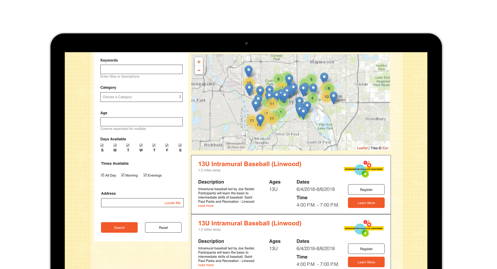

Sprockets
Situation
Sprockets outlined a set of primary user goals and site goals they had for their website. They asked for a usability analysis of the website, hoping a redesign would draw more individuals to their site and increase engagement with out-of-school programs. The primary area of concern was their program finder tool which aids parents in identifying out-of-school programming for their child.
Sprockets is an out-of-school and after-school advocacy organization. Using Sprockets, St. Paulites are able to get their kids into sports, educational programs, and more. Their website is a resource for quality out-of-school programming.
I collaborated with a group of three other UX designers to conduct a usability heuristics evaluation and user testing to identify key opportunites for improvement. I then developed a set of recommendations to improve Sprocket's Program Finder tool.
Action
Current Finder
The program finder is the primary tool of the website. It offers a means to find and register for programs in the St. Paul area. Our findings revealed a lack of information hierarchy. Users also had little control when searching for programs for their child. As Sprockets is a non-profit organization, on a non-profit budget, it was important for us to identify the problems we could solve quickly and cheaply. We needed user feedback.
User Testing
Each member of our team would conduct two remote usability tests and one in person test. Participants completed a set of scenarios, constructed to direct them to pain-points. We gathered background information to identify our participants familiarity with Sprockets.
We asked participants to locate a program for a child using the site’s Program Finder tool. We provided an age, dates, and an activity type for the users to search for. Participants had several opportunities to find a program that would fit all parameters. Even with providing them specific instructions, three out of twelve participants were unable to find a program. They also reported difficulty finding key information about the program. Others complained about the lack of search parameters.
Simple Solution
Knowing the limited budget and team size of Sprocket's, I recommended an information hierarchy centric approach to improve engagement. Elevating information like the date, time, and putting the quality partner designation on the search results page would help users to better compare programs at a quick glance. I suggested carrying that same information hierarchy over to the individual program pages. Bringing important elements, like the register CTA, helps create a stronger journey. Users won't feel as lost or unguided as they did before. Combined with a more powerful search functionality, parents can find programs and place their children with ease.
Recommendations Report
Looking Forward
Sprocket’s website seems to have struck a chord with parents. Users trusted the site without much reason beyond it looking like a children's website. It is surprising the powers of aesthetics on an individuals perception of their experience. I had always heralded cleaner, less clutter web sites, as they instilled an inherent trust for me. But now I see how this same effect can apply for other scenarios. And if a style and presentation can evoke those emotions, how much better could a user’s experience be following usability standards? With a couple of small changes users should be able to better find programs for their children. Thereby accomplishing Sprocket's goal of getting more kids into quality programming.